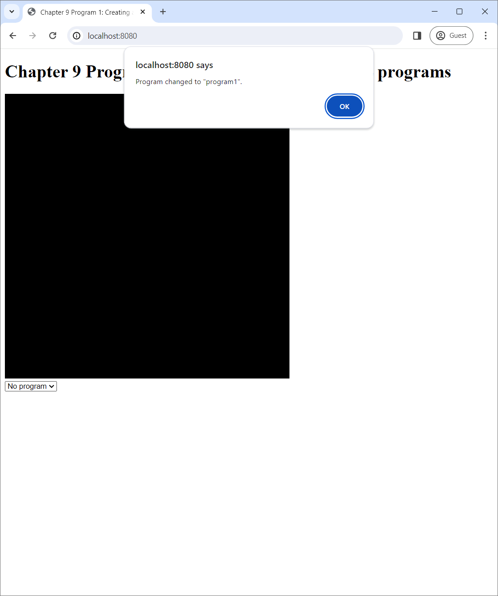

We learned about the basics of WebGL programming in the last chapter, but all we could do was clearing the screen and limiting the area to which the clearing affects. To do more complicated things such as displaying a scene, we need to be able to draw primitives. (Recall Section 5.3)
One of the difficulties of learning WebGL is that drawing primitives is intertwined with another aspect of the library: writing GLSL programs. As mentioned Section 7.3.1, we need to create a GLSL program before drawing a primitive. This process has many steps that would take some time to explain. Once it is done, we must also specify the vertices that make up the primitives that we want to draw and connections between them. This process also takes multiple steps as well.
This chapter explains the above two processes. We first plunge ahead through the whole process of creating and using GLSL programs without actually learning how to write them, leaving the details of GLSL programming as the subject of the next chapter. We then learn how to draw three types of primitives: points, lines, and triangles. Next, we learn about the index buffer and how it can be used to specify primitives. Lastly, we learn about viewports and how it can be used to specify the screen area over which primitives are drawn.
The source code of the program is available in the chapter-09/program-01 directory of the source code repoository. Running it, you would see a black canvas and a combo box.
The combo box has three options that you can select: "program0," "program1," and "No program." When you select "program0" or "program1," a dialog box will pop up that tells you that the "program" has changed to the corresponding choice. When you select "No program," the dialog would say the application is not using any program.
|  | ||
| (a) | (b) | (c) |
What happen under the hood is that, at any given time, a WebGL application either "use" a WebGL program or does not use any. Here, when a GLSL program is used, the graphics pipeline is customized according to what is written in the program's code. Our WebGL application starts up, it creates two WebGL programs called "program0" and "program1." It then immediately uses "program0," and it changes the program it uses according to the value of the combo box, which can be changed by the user. However, the application only uses the program, but it does not draw any primitives. So, we cannot see anything on the canvas at all. (We will start putting things on the canvas from Program 2 onward. Please be patient.)
As previously discussed in Chapter 7, A GLSL program in the context of WebGL 2.0 is made up of two shaders: a vertex shader and a fragment shaders. Program 1 has three shaders: a vertex shaders whose source code is in vertex-shader.vert and two fragment shaders whose source code is in fragment-shader-0.frag and fragment-shader-1.frag. The two GLSL programs are created from the shaders as follows:
| GLSL program | Vertex shader | Fragment shader |
|---|---|---|
| program0 | vertex-shader.vert |
fragment-shader-0.frag |
| program1 | vertex-shader.vert |
fragment-shader-1.frag |
Let us take a brief look at the vertex shader's source code. In this chapter, we would only read it to understand at a high-level what it does without worrying about the syntactic details.
#version 300 es
in vec3 position;
void main() {
gl_Position = vec4(position, 1);
}vertex-shader.vert.The source code looks syntactically similar to Javascript because it is written in GLSL, a language in the C family to which Javascript also belongs. The first line indicates that we are using GLSL version 3.00 ES, the latest version supported by WebGL 2.0. Similar to system program languages like C and C++, there is a function called main that serves as the "entry point:" it is the function that is run whenever the shader is run.
Recall from Section 7.3.2 that a vertex shader must output clip space coordinates of the vertex being processed. The receiver of this value is the gl_Position variable, which is implicitly defined by the system. Because clip space coordinates have 4 components, the variable is of type vec4, which represents 4-component vectors.
The shader's output is created by taking the value of the position variable and adding the number 1 at the end of it. Now, position is a global variable of type vec3 that is declared with the "in" keyword, signifying that it is an input to the shader. While, in Program 1, we have not put any values in this variable yet, we will put vertex positions in it starting with Program 2.
So, what the vertex shader does is simply copying the $xyz$-coordinates of vertex positions into the clip space coordinates whose $w$-component is always 1. Recall again from Section 7.3.2 that the next step in the graphics pipeline after the vertex shader runs is the perspective divide, in which the NDCs are computed from the clip space coordinates by dividing the clip space $xyz$-coordinates with the $w$-coordinate. Because the $w$-coordinate is always 1, the NDCs would be equal to the vertex positions exactly. The vertex shader thus allows the user of the graphics pipeline to directly specify the NDCs. Because the $x$- and $y$-coordinates of the NDCs represent 2D positions on the canvas, this vertex shader sets up a 2D drawing system. We will see this in more details in other Programs in this chapter.
Let us now turn our attention to the fragment shaders. They are even simpler than the vertex one.
#version 300 es
precision highp float;
out vec4 fragColor;
void main() {
fragColor = vec4(1.0, 1.0, 1.0, 1.0);
}fragment-shader-0.frag.#version 300 es
precision highp float;
out vec4 fragColor;
void main() {
fragColor = vec4(0.0, 1.0, 0.0, 1.0);
}fragment-shader-1.frag.The two source files have the exact same structure. The first lines of both files indicate the GLSL version. Both have main functions, which serve as entry points like in the vertex shader. Both have the precision highp float; lines, which specify the number of bits used to represent values held by the float type. We will study the precise effect of this line later in Chapter 10, so let us not worry about it for now.
We discussed earlier in Section 7.3.2 that a fragment shader must decides whether to discard the fragment it process. If not, it must output the RGBA color of the fragment. The two fragment shaders above always does the latter. The receiver of the output value is the fragColor variable, which is a global variable declared with the keyward out to signify that it is the output. The first fragment shader always output the RGBA color $(1,1,1,1)$, which is white. The second fragment shader always output $(0,1,0,1)$, which is green. In other words, any primitives rendered by the two fragment shaders are white and green, respectively.
As a result, program0, which is created from the vertex shader in Section 9.1.2 and the first fragment shader, would allow the user to directly specify the on-screen position of the vertices, and it would color all primitives white. On the other hand, program1 would do the same thing, but all primitives would be green instead.
A GLSL program is made of a vertex shader and a fragment shader. Hence, in order to create a program and render primitive with it, we must create shaders first. The process of creating a shader is encapsulated in the function createShader in the program.js file. The code is reproduced in full below.
function createShader(gl, shaderType, sourceCode) {
// Step 1: Create the shader.
let shader = gl.createShader(shaderType);
// Step 2: Set the shader source.
gl.shaderSource(shader, sourceCode);
// Step 3: Compile the shader.
gl.compileShader(shader);
// Step 4: Check for errors.
if (!gl.getShaderParameter(shader, gl.COMPILE_STATUS)) {
return shader;
}
let infoLog = gl.getShaderInfoLog(shader);
gl.deleteShader(shader);
throw new Error("An error occurred compiling the shader: " + infoLog);
}createShader function.The function has three arguments.
gl is the WebGL context we have been creating and using in all programs since the last chapter. We make it a a function argument instead of a global variable like in previous programs because this would allow us to put the createShader function in its own file without having to worry about how gl is obtained in index.js.shaderType is a GLenum value that indicates the type of shader the we would like to create. It can be either gl.VERTEX_SHADER or gl.FRAGMENT_SHADER.sourceCode is a string containing the source code of the shader. We will load the source code from the .vert and .frag files above, and we will discuss how to do this later.The process of creating a shader has four steps as indicated by the comments in the code. First, we use the createShader method of the WebGL context to create a WebGLShader object, which is used to represent a shader by the WebGL API. The method accepts a GLenum that indicates the type of the shader to which we just pass the shaderType variable.
let shader = gl.createShader(shaderType);Second, we call the the shaderSource method of the WebGL context to set the source code of the newly created WebGLShader object.
gl.shaderSource(shader, sourceCode);Third, we call the compileShader method of the WebGL context. Here, compiling a shader turns the shader source code, which is human-readable text, into machine code that the GPU can understand and run.
gl.compileShader(shader);Then, we check whether the compilation was successful or not. This is done retrieving the compilation state of the WebGLShader object with the WebGL context's getShaderParameter method, passing gl.COMPILE_STATUS as the second argument. If the compilation is successful, the method would return true. If this is the case, we can return the created WebGLShader object to the function's caller.
if (gl.getShaderParameter(shader, gl.COMPILE_STATUS)) {
return shader.
}If compilation fails, we want to inform the function's caller why it fails. This information is available in the shader's "information log," which we can retrived with the WebGL context's getShaderInfoLog method.
let infoLog = gl.getShaderInfoLog(shader);Before we can inform the caller of the infomation log, we clean up the WebGLShader object, which is now cannot be used because of the failed compilation. Here, we delete it with the deleteShader method in order to free resources occupied by the shader so far.
gl.deleteShader(shader);Lastly, we throw a Javascript exception with a message created from the information log.
throw new Error("An error occurred compiling the shader: " + infoLog);Compilation can fail because of various reasons, but the most significant would be syntax errors in the source code. Throwing the above exception is thus very important because it allows us, the programmer, to learn about our mistakes and rewrite the source code to fix them.
We now turn our attention to the process of creating a GLSL program, which is encapsulated in the createGlslProgram function in program.js. This function creates a GLSL program from two pieces of source code, one for the vertex shader and another for the fragment shader. Its source code is reproduced below.
function createGlslProgram(gl, vertexShaderSource, fragmentShaderSource) {
// Step 1: Create a program object.
let program = gl.createProgram();
// Step 2: Create an attach the shaders.
let vertexShader = createShader(gl, gl.VERTEX_SHADER, vertexShaderSource);
gl.attachShader(program, vertexShader);
let fragmentShader = createShader(gl, gl.FRAGMENT_SHADER, fragmentShaderSource);
gl.attachShader(program, fragmentShader);
// Step 3: Link the program.
gl.linkProgram(program);
// Step 4: Validate the program.
gl.validateProgram(program);
// Step 5: Check for errors.
if (!gl.getProgramParameter(program, gl.LINK_STATUS)) {
let infoLog = gl.getProgramInfoLog(program);
gl.deleteProgram(program);
throw new Error("An error occurred linking the program: " + infoLog);
} else {
return program;
}
}createGlslProgram function.{kind=link}
{kind=link}
{kind=link}
{kind=link}